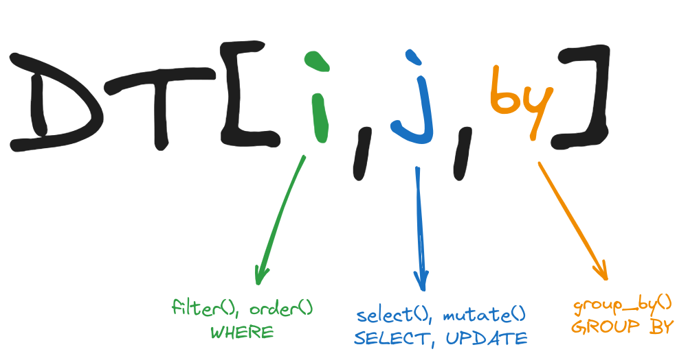

Sintaxis básica
data.table es un objeto de R que está pensado para mantener las operaciones en uno o pocos comandos. La lógica de la sintaxis básica es la siguiente:
Un espacio para las operaciones sobre las filas, por ejemplo filtrar u ordenar.
Un espacio en el que se ejecutan las operaciones sobre las columnas, por ejemplo, seleccionar, modificar, crear, etc.
Un espacio en el que se pueden indicar agrupaciones con base en las cuales se apliquen otras operaciones (group_by en dplyr)
Nota: Estos 3 tipos de operaciones no son los únicos, existen más y se pueden consultar en XXX.
